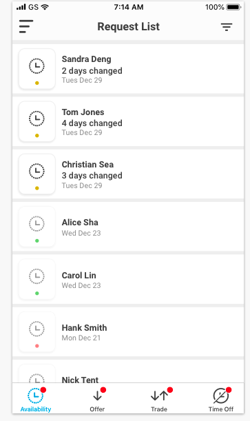
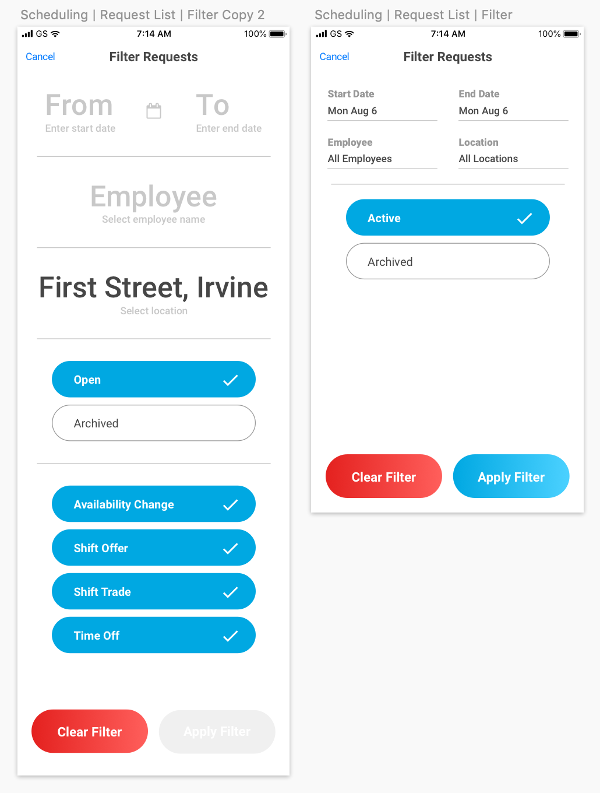
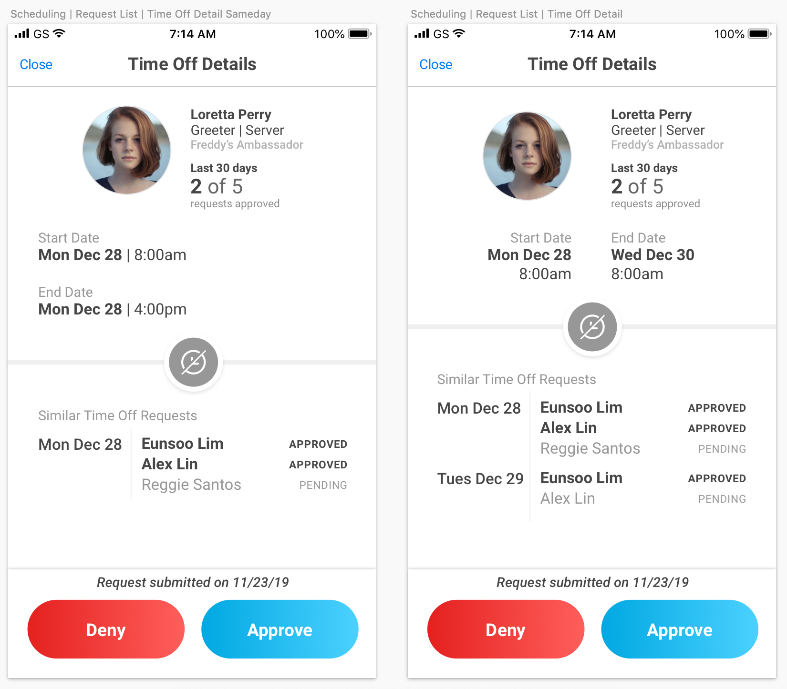

While R365's web application enabled restaurant managers to handle most of their scheduling duties, our team understood that a manager couldn't spend their entire day in front of a desktop computer. Our next mission was to develop a mobile application to allow them to accomplish scheduling-related tasks while on the go. The mobile app would be where restaurant managers approved/denied employee requests, addressed conflicts, and viewed upcoming schedules, as well as identify the effects of changes to an employee's schedule.
Objective:
Deliver a seamless experience across web and mobile for restaurant managers, providing context to managerial decisions.
Process
Since we had garnered so much information from our web scheduling interviews, most of my time on this project was focused on the user interface. The product owner stressed that managers, unable to interact with customers in the back office, should be freed to be in the front of house as much as possible. My goal was to surface only metrics relevant to manager priorities, in a way that would be accessible and actionable.
Manager priorities:
Identifying when overtime hours would be triggered (in an effort to avoid such instances),
retaining authority over scheduling, and
keeping employees informed of any changes to their schedule.
Design-wise, I started with our Shift Offer process, the most complex of the requests. I sketched possible visualizations of each set of requests. As we progressed, it became more apparent which information was most necessary for a lightweight manager scheduling MVP.
I received helpful feedback on my design from my colleague, also a UX designer. I also spent time working closely with the mobile development team, fine-tuning the design and ensuring consistency between our Android and iOS applications.
Design
Modifying existing processes
One of our existing processes was troubling clients, so the first step was to reconsider it. Shift Drop was difficult for certain restaurants because it meant their employees would not take ownership of shifts originally assigned to them. A clunky and painful experience for managers because then they had to put in the legwork to find a replacement for the employee who was attempting to drop a shift. The product owner decided our best move was to alter this paradigm and put the onus on the employee attempting to drop a shift.
We toyed with different wording. On the employee side, "Claim Shift" became "Request Shift". For the managers, we toyed with "Shift Bidding" but ended with "Shift Offer", to reflect the actual request made by the original employee, while "Shift Bid" only refers to the claim request.
We streamlined this process by not passing the request along to a manager until at least one employee had attempted to claim the shift. It required more communication between manager and employee, and might lead to bias as managers might be more helpful to certain employees over others. We wanted to save the managers time of having to handle these shift drops. Reducing the potential points of failure in this process required minimizing these interactions.
The Request List was a summary view of the requests submitted by all employees belonging to that restaurant location. I restricted action to the detailed request pages as a safeguard against accidental approvals or denials. Managers could not take any actions on the list view. From the list view, they would see only vital information for each request - the request type, the employee who had submitted the request, the date/time of request, and the request's status.
An early iteration of Request List showed approved and denied requests in the same list as pending requests
It was important to fine-tune the filtering process for the Request List. A manager might want to view requests from multiple locations at once, or they might only want to view those from a certain time period.
The first and final drafts of my Filters page
Request Details
I designed request details pages so they were intuitive and easy to interpret, leaning on font color, weight, and placement.

An earlier version of the Time Off Request Detail screen had used the header "Other Staff Time Off", which was not as specific and implied that it was all staff from that location. I wanted to clarify that only the employees who shared job codes with the original requesting employee would be listed here, so I stuck with "Similar Time Off Requests".
The product owner suggested labels like "original hours" and "net change resulting hours", which were highly descriptive but not at all colloquial. I opted to drop the technical labels and replace them with the more natural "hours after trade".
The details of the specific shifts being traded were of secondary concern, so I treated them accordingly in my design. After discussion with the product owner, star rating was confirmed as a 'nice to have' as some restaurants might not use the rating system at all.
In an early iteration of the Availability Change Details screen, I only indicated the timeframes that had been modified. However, due to mobile's limited horizontal real estate, I chose to display them vertically. I utilized color to indicate differences in an employee's schedule, whether the updated day had more hours of availability (green) or less (red).
Implementation
I worked closely with the mobile development team for this project in order to fully understand our capabilities and restrictions from a back-end point of view. For example, some of the features the product manager and I wanted to implement would have required too heavy of a lift from our backlogged back-end team, so we came up with a workaround or chose not to display those items in the sections it would most affect.
Change is always difficult. Recognizing this, we empowered our customer success department with internal learning guidelines, including an in-app walkthrough of the new features. We hoped this would alleviate some of the pains normally associated with onboarding. Providing this quick-start guide as documentation for our end users as well as our internal support folks would help restaurant managers get the most value out of the new application.
Reflection
I'm fairly proud of my work on Mobile Scheduling - attributable to the iterations and focus on a clean, clear design. I'd wondered if designing for mobile might feel too constrained, but I actually appreciated how it forced me to consider the use for each button and line of text - whether elements were truly necessary, and if they weren't included, would someone be able to understand based on context clues and affordances.
Details
ContextMobile application for restaurant managers to view upcoming schedules and process pending employee requests